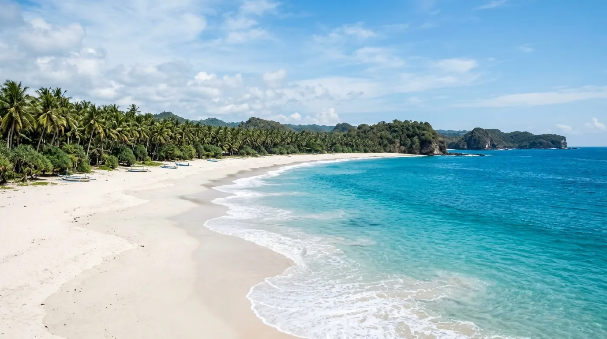
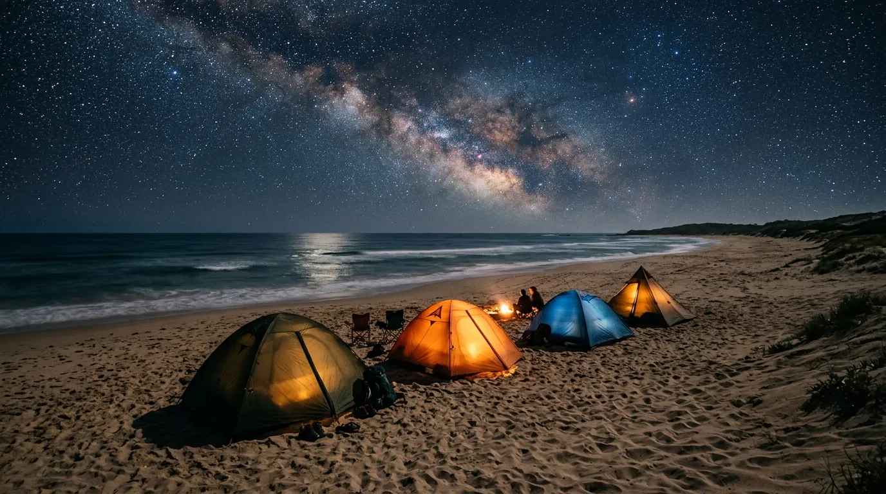

Bagi pencinta alam yang ingin merasakan tidur di bawah langit terbuka ditemani suara deburan ombak, Pantai Sendiki adalah jawabannya. Terletak di kawasan pesisir selatan Malang yang masih asri, pantai ini dikenal luas sebagai salah satu pantai alami Malang dengan pasir putih memukau dan suasana yang jauh dari kesan komersial.
Tak heran jika camping Pantai Sendiki menjadi salah satu aktivitas favorit wisatawan yang datang, baik untuk sekadar healing akhir pekan maupun berburu momen sunrise dan sunset di tepi Samudra Hindia. Berikut ulasan lengkapnya.
Pantai Sendiki adalah surga tersembunyi di pesisir selatan Malang, tempat di mana suara ombak, hamparan bintang, dan panorama sunrise-sunset menjadi teman setia para pencinta camping.
Sekilas Tentang Pantai Sendiki
Pantai Sendiki terletak di Desa Tambakrejo, Kecamatan Sumbermanjing Wetan, Kabupaten Malang, Jawa Timur. Lokasinya berada tepat di sebelah Pantai Balekambang dan tidak jauh dari Pantai Sendang Biru, menjadikannya salah satu titik yang mudah dijangkau jika ingin sekaligus menjelajahi beberapa pantai populer lain di kawasan Malang Selatan.
Jarak dari pusat Kota Malang menuju Pantai Sendiki sekitar 69-70 km, dengan waktu tempuh kurang lebih 2 jam menggunakan kendaraan pribadi. Pantai ini menghadap langsung ke Samudra Hindia, sehingga wisatawan bisa menikmati pemandangan laut lepas yang begitu luas, dengan gradasi warna biru cerah yang semakin memesona saat terpapar sinar matahari.
Karena letaknya yang belum terlalu ramai dan suasananya yang masih tersembunyi, Pantai Sendiki kerap dijuluki sebagai salah satu surga tersembunyi di pesisir selatan Malang.
Pesona Pasir Putih dan Laut Biru
Salah satu daya tarik utama yang membuat Sendiki layak disebut sebagai pantai alami Malang adalah hamparan pasir putihnya yang lembut, membentang luas di sepanjang garis pantai. Warna pasirnya yang cerah berpadu apik dengan birunya air laut, menciptakan panorama yang begitu memanjakan mata, terutama saat disinari cahaya matahari pagi maupun senja.
Deburan ombak Samudra Hindia yang khas menambah kesan gagah sekaligus menenangkan, cocok bagi wisatawan yang ingin melepas penat sejenak dari kesibukan sehari-hari. Angin sepoi-sepoi yang berembus di sepanjang pantai turut menambah kesyahduan suasana, menjadikan Sendiki tempat yang pas untuk sekadar duduk santai maupun berjalan kaki menyusuri bibir pantai.
Camping Pantai Sendiki, Primadona Wisatawan
Aktivitas yang paling identik dengan Pantai Sendiki adalah camping. Kawasan pantainya yang lapang, ditambah suasana yang masih tenang dan jauh dari keramaian kota, menjadikan Sendiki destinasi favorit bagi para pencinta kemah yang ingin menghabiskan malam di tepi laut.
Bagi yang tidak membawa perlengkapan sendiri, pengelola menyediakan jasa sewa tenda dengan kisaran harga sekitar Rp75.000 untuk kapasitas 4-5 orang. Sementara bagi yang membawa tenda sendiri, cukup dikenakan biaya retribusi sekitar Rp20.000. Namun perlu diingat, pengunjung yang berencana bermalam wajib melapor terlebih dahulu kepada pihak pengelola sebagai bagian dari prosedur keamanan.
Momen berkemah di Sendiki menjadi semakin istimewa karena wisatawan bisa menyaksikan langsung pergantian dari sunset di sore hari hingga sunrise keesokan paginya, sambil ditemani suara ombak dan hamparan bintang di langit malam yang masih relatif bebas polusi cahaya. Meski begitu, penerangan di area pantai pada malam hari masih terbatas, sehingga penting untuk membawa alat penerangan pribadi seperti senter atau headlamp.

Fasilitas di Pantai Sendiki
Meski suasananya masih alami, Pantai Sendiki tetap dilengkapi fasilitas dasar yang dikelola dan dirawat oleh masyarakat lokal setempat, di antaranya:
- Area parkir kendaraan roda dua dan roda empat
- Toilet dan kamar mandi umum untuk bilas
- Warung makan sederhana milik warga sekitar
- Gazebo untuk berteduh dan bersantai
- Area camping yang cukup luas
- Rumah pohon yang bisa disewa sebagai spot bersantai maupun berfoto
Kehadiran fasilitas-fasilitas ini menunjukkan komitmen warga setempat dalam menjaga kebersihan dan kenyamanan Pantai Sendiki, sehingga kunjungan wisatawan tetap terasa nyaman meski berada di kawasan yang masih alami.
Aktivitas Lain di Pantai Sendiki
Selain camping, ada beberapa aktivitas lain yang bisa dinikmati wisatawan selama berada di Pantai Sendiki, di antaranya:
- Berburu foto di sepanjang garis pantai dengan latar pasir putih dan laut biru
- Bersantai di rumah pohon sambil menikmati suasana pantai dari sudut yang berbeda
- Menikmati sunrise dan sunset yang menjadi daya tarik utama bagi wisatawan yang bermalam
- Bersantai di gazebo sambil menikmati jajanan dari warung sekitar
- Berjalan santai menyusuri pantai menikmati semilir angin laut yang menenangkan
Harga Tiket Masuk dan Jam Operasional
Berikut rincian biaya terbaru yang perlu kamu siapkan:
Pantai Sendiki buka selama 24 jam setiap hari tanpa jadwal tutup tertentu, sehingga wisatawan bisa berkunjung kapan saja. Meski begitu, waktu terbaik untuk datang adalah pagi atau sore hari, saat suasana pantai terasa paling nyaman dan pencahayaan alami mendukung untuk berfoto.
Catatan: Harga tiket, biaya parkir, dan kebijakan pengelolaan Pantai Sendiki dapat berubah sewaktu-waktu. Disarankan untuk mengecek informasi terbaru sebelum berangkat.
Tips Berkunjung ke Pantai Sendiki
- Lapor ke pengelola terlebih dahulu jika berencana berkemah, sebagai bagian dari prosedur keamanan.
- Bawa alat penerangan pribadi seperti senter atau headlamp karena penerangan di area pantai pada malam hari masih terbatas.
- Datang pagi atau sore hari untuk suasana yang lebih nyaman sekaligus pencahayaan foto yang optimal.
- Siapkan perlengkapan camping sendiri jika ingin lebih hemat, meski penyewaan tenda juga tersedia di lokasi.
- Jaga kebersihan area camping agar kealamian Pantai Sendiki tetap terjaga untuk pengunjung berikutnya.
- Waspada terhadap ombak Samudra Hindia yang cukup besar saat bermain di tepi pantai.
Kesimpulan
Pantai Sendiki menjadi bukti bahwa Malang Selatan masih menyimpan banyak surga tersembunyi yang layak dijelajahi. Sebagai salah satu pantai alami Malang dengan pasir putih memukau dan suasana yang tenang, Sendiki menjadi destinasi sempurna bagi siapa saja yang mencari pengalaman camping Pantai Sendiki yang syahdu, ditemani suara ombak, hamparan bintang, dan panorama sunrise-sunset yang tidak akan mudah dilupakan. Dengan harga tiket yang sangat terjangkau dan fasilitas yang cukup memadai, tidak heran jika pantai ini terus menjadi favorit para pencinta alam dan camping di Malang.
Catatan: Harga tiket, biaya parkir, dan kebijakan pengelolaan Pantai Sendiki dapat berubah sewaktu-waktu. Disarankan untuk mengecek informasi terbaru sebelum berangkat.